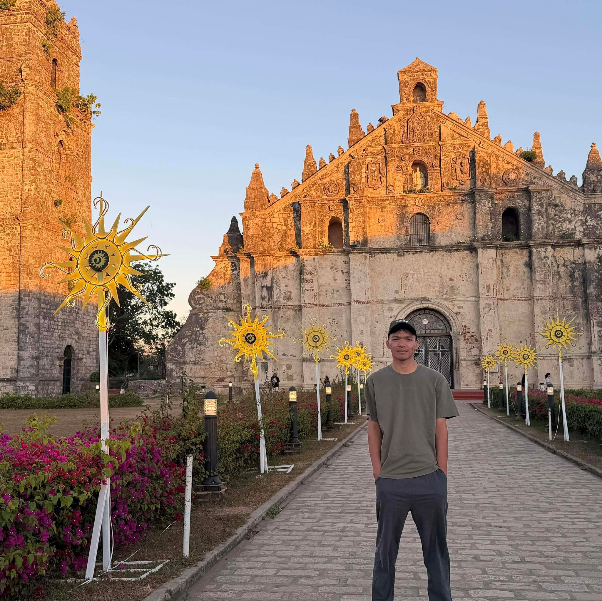

The three students behind CineLog — each contributing their unique skills to bring this project to life.

| Member | Role | Key Contributions |
|---|---|---|
| Justine Janolino | Lead Dev | JS logic, form validation, localStorage, CRUD operations |
| Westly Rivera | UI/UX | CSS design system, dark theme, animations, responsive layout |
| Joshua Mamiit | Content | HTML structure, Canva presentation, GitHub deployment, QA |